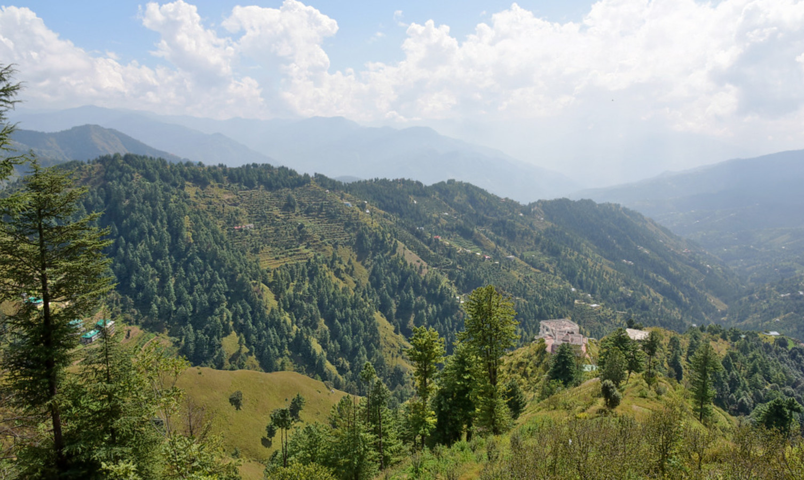

NarkandaGeneralGeographyClimateFloraDemographicsCulture
Geography
Narkanda is located at 31.27°N 77.45°E.[1] It has an average elevation of 2708 metres (8599 feet). Hatu Peak which is at 3200 m (11,155 ft) is 8 km from Narkanda. Kotgarh is 16 km from Narkanda and known for apple orchards. Kumarsain which is 18 km from Narkanda is the nearest town and Narkanda comes under Kumarsain administrative subdivision. Satyanand Stokes brought the apple to this place and helped strengthen the economy of this area. Today Rs 3,000 Crore direct and indirect income is generated through apple production. Presently apple growers are shifting to bring their farm under cherry cultivation to fetch fast money in their pocket as holdings are marginalised d noue to population factor. The grandson of Mr. Stokes is experimenting to develop new variety of apple for better production.
